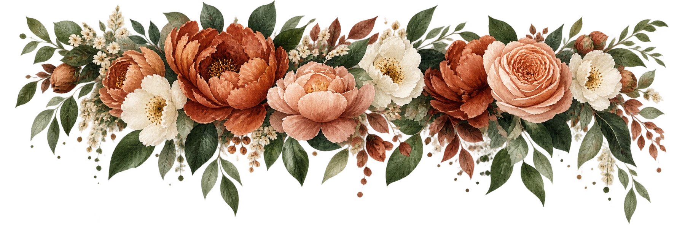

CON AMOR, PARA TODA LA VIDA
¡Nos casamos!
Ivan&Maya
14 de noviembre de 2026
GAIA · Jardín de Eventos y Bodas
Nuestra invitación ↓Elegimos caminar juntos
Hay encuentros que cambian la vida y amores que se convierten en hogar. Hoy queremos dar un nuevo paso en nuestra historia, rodeados del cariño de quienes más queremos.
Nos hará muy felices compartir contigo
el día de nuestra boda.
NUESTRA HISTORIA CONTINÚA
Contigo,
siempre.
Ivan
Gonzales Marroquin&Maya Lucero
Escobar Suárez
Un amor que florece.
Una vida por compartir.
Nuestras madres
Rosa Suárez
Aura Elida
Marroquin Marroquin †
Siempre presente en nuestros corazones.
Nuestros padrinos
Oscar Angel
Majluf Covarrubias
&Lourdes
Dehne Delgadillo
Julia Beatriz
Escobar Torrico
&Wilfredo Jaime
Salamanca Veizaga
RESERVA ESTE DÍA PARA NOSOTROS
Noviembre nos une
Sábado 14 de noviembre de 2026
15:30
Recepción de invitados.
El comienzo de nuestro para siempre.
Noviembre 2026
LMMJVSD
El día de nuestra boda
Contamos los momentos
Itinerario de nuestro gran día
Recepción de invitados
Ceremonia religiosa
Entrada de los novios y acto protocolar
Cena de celebración
Corte de la torta
Lanzamiento del ramo
UN MISMO LUGAR, TODOS LOS RECUERDOS
GAIA
Jardín de Eventos y Bodas
Recepción de invitados
15:30
Ceremonia religiosa
16:00
Recepción social
Al finalizar la ceremonia
La ceremonia y la recepción se realizarán
en el mismo salón.
Tu pase para celebrar
INVITACIÓN PERSONAL
Pase para 3 personas
Ivan & Maya
14 · NOVIEMBRE · 2026Será una alegría compartir este día contigo.
Código de vestimenta
Formal
Elegancia para una celebración inolvidable.
Tu presencia es nuestro mejor regalo
¿Dudas o sugerencias?
Escríbenos por WhatsApp.
Ayuda por WhatsAppSerá hermoso
celebrar contigo.
14 · 11 · 2026